10 使用 Vault + Cert Manager 管理 Kubernetes 集群中的数字证书
前言
之前的文章介绍了如何使用 OpenSSL 来创建我们的个人数字证书体系，但是 OpenSSL 只是一个本地化的工具，当用户需要申请一个数字证书时，它无法作为服务器来提供自动化签发证书的功能。
Vault 就应对了这种需求，它是由 Hashicorp 公司开发的一款专门用来管理各种数字证书、密钥、密码、登录凭证等各类机密信息的服务器程序。我们既可以在 Vault 中直接创建证书体系，也可以把创建好的 CA 证书导入 Vault，然后由其管理证书的签发和吊销事项。
我们有一个 Web 应用，部署在集群中，它需要一个数字证书，这时候只需要它发送一个 CSR 请求到 Vault 服务器，Vault 就能自动对请求者进行验证并使用保存好的 CA 来签发用户证书。
Cert Manager 是一款云原生应用程序，它作为一个服务类工具，可以帮助 Kubernetes 集群中的应用创建证书请求 (CSR)，转发给 Vault Server，由 Vault Server 中 CA 签名认证后颁发证书，然后再保存到 Secret 资源对象中供应用程序使用。
有了 Vault + Cert Manager 这套系统，k8s 集群中的微服务所需要的证书服务就变得完全自动化了。
一个大致的示意图如下：
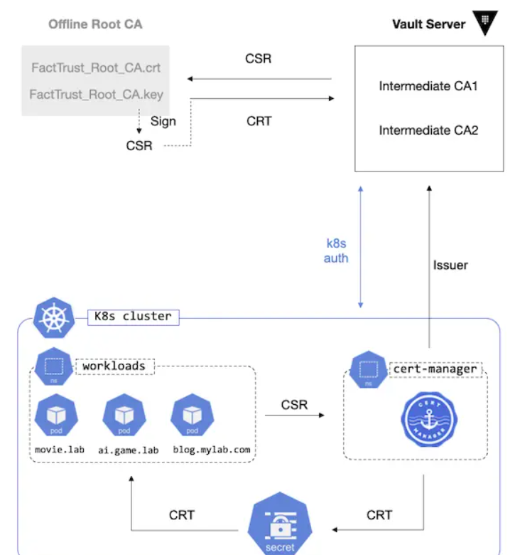
第一部分：安装并配置 Vault
下面的命令用于在 Ubuntu 下安装 Vault 程序
$ curl -fsSL https://apt.releases.hashicorp.com/gpg | gpg --dearmor | sudo tee /usr/local/share/keyrings/vault.gpg > /dev/null
$ echo "deb [signed-by=/usr/local/share/keyrings/vault.gpg] https://apt.releases.hashicorp.com $(lsb_release -cs) main" \
| sudo tee /etc/apt/sources.list.d/vault.list
sudo apt update
sudo apt install vault
安装成功后，会自动生成一个自签名的证书（用于启动 HTTPS 服务）。
根据之前的文章，我们已经搭建了自己的 CA 证书体系，所以我们可以用自己的 CA 证书来签名得到一个应用程序（也就是这里的 vault)所需的数字证书。
创建 vault 自身所需的证书过程如下：
$ openssl req -new -sha256 -nodes \
-keyout vault.key \
-out vault.csr \
-subj="/O=HashiCorp/CN=vault-dev.lab"
$ openssl ca -days 364 -in vault.csr -out vault.crt \
-cert FactTrust_RSA_ICA1-PKCS8.crt
-keyfile CA/private/FactTrust_RSA_ICA1.key \
-extensions usr_ext \
-config <(cat /etc/ssl/openssl.cnf -<<END
[usr_ext]
basicConstraints = CA:FALSE
subjectKeyIdentifier = hash
keyUsage = digitalSignature,keyEnciperment
extendedKeyUsage = clientAuth,serverAuth,codeSigning
subjectAltName = @alt_names
[alt_names]
IP.1 = 127.0.0.1
IP.2 = 192.168.3.3
DNS.1 = localhost
DNS.2 = vault-dev.lab
END
)
上面的命令和原理在之前已经介绍过，这里就不多介绍。
接下来配置 vault 并启动
默认的配置文件是 /etc/vault.d/vault.hcl
我们把生成好的证书和 Key 信息填入其中：
$ listener "tcp" {
address = "0.0.0.0:8200"
tls_cert_file = "/opt/vault/tls/vault.crt"
tls_key_file = "/opt/vault/tls/vault.key"
}
启动
sudo systemctl start vault
或
$ vault server -config=/etc/vault.d/vault.hcl
配置环境变量，以便可以在使用 vault 命令时，其自动连接正确的 server 地址
$ export VAULT_ADDR='https://127.0.0.1:8200'
接下来需要要对 vault 进行初始化
$ vault operator init -key-shares=3 -key-threshold=2
vault 服务器的登陆认证使用了多重密钥，默认是 5 个密钥，解密门限是 3，这里设置 3 个密钥，解密门限为 2。
Tips：
这里的多重密钥是 vault 自动生成的，但我们也可以使用之前介绍的 GPG Key，比如：
$ vault operator init -key-shares=3 -key-threshold=2 \
-pgp-keys="alice.asc,bob.asc,david.asc"
注意：如果使用 gpg key，那么 gpg 导出公钥的时候需要用 base64，不能用 --armor。
init 完成后会生成 root token（输出在屏幕中），我们后续需要用这个 token 进行才可以登录。不过，登陆之前，还需要先 unseal：
vault operator unseal
依次执行 3 次 unseal 命令，每次填入一个 key 即可。
unseal 之后，就可以执行 vault login 登录了（输入 root token）。
登录成功，vault 还会把 token 保存在 ~/.vault-token 以方便后续操作。
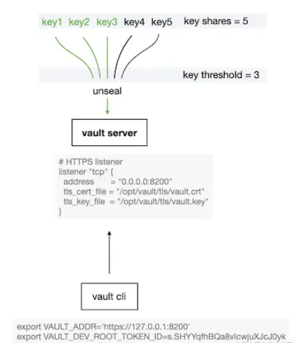
第二部分：Vault 启动 PKI 引擎并创建 CA 证书
Vault 中的机密信息存储引擎（Secret Engine）
Vault 提供多种存储引擎来保存不同类型的机密信息（Secret)，常见的比如 kv, ssh, pki, active directory 等等。我们数字证书应该使用 pki 引擎来存储和管理。
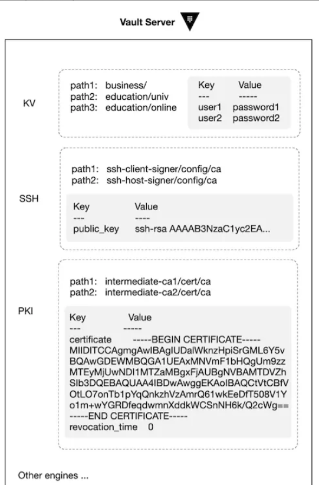
这里的 path 是挂载点 (mount point)，一个 secret engine 就相当于一个文件系统，里面可以有多个挂载点，每个挂载点就是一个路径 path。
PKI 引擎
在实际操作之前，先理一下我们需要的证书组织结构。
跟之前介绍的使用 OpenSSl 创建的证书体系一样，我们需要有 Root CA，Intermediate CAs, User Certificate。Vault 支持直接在 pki 引擎中创建这三类证书。
不过，虽然 Vault 的安全性高，它毕竟也是一个需要联网的软件，只要联网，就免不了有风险。
因此，业界的最佳实践是把 Root CA 放在一个 Offline 的存储媒介上（比如 Yubikey），用它签发一些有效期短的 Intermediate CA 证书，然后把这些 Intermediate CA 证书导入到 Vault 中进行管理。
Intermediate CA 的 Key 和 CSR 在 Vault 中创建，然后我们用 Offline Root CA 对 CSR 签名得到证书后再导入 Vault 即可。
1. 创建 Offline Root CA
$ mkdir factsign
$ cd factsign
$ mkdir -pv {newcerts,CA/private}
$ touch index.txt
$ echo "01" > serial
$ echo "01" > crlnumber
$ echo 'gM6*NTNtu^&YCnKB6=' > rcapass
$ openssl enc -aes256 -pbkdf2 -salt -in capass -out capass.enc
$ openssl req -x509 -newkey rsa:4096 -sha256 -days 7300 -passout file:capass.enc \
-keyout FactSign_Root_CA.key -out FactSign_Root_CA.crt \
-subj "/C=US/O=Security/OU=www.factsign.com/CN=FactSign Root CA" \
-addext keyUsage=critical,cRLSign,keyCertSign,digitalSignature
$ mv {capass.enc,FactSign_Root_CA.key} CA/private/
$ rm capass
$ chmod 700 CA/private
至此，离线的 Offline Root CA 就创建好了， 接下来需要把它导入到操作系统的 Trusted Key Store 中去。
Linux (Ubuntu)
$ sudo cp FactSign_Root_CA.crt /usr/local/share/ca-certificates/
$ sudo update-ca-certificates
macOS
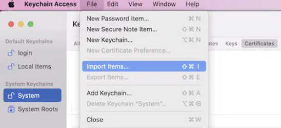
注：为了简略起见，上面省略了把 Key 转换成 pkcs#8 格式的步骤，不过不影响使用。
2. 在 Vault 中创建 Intermediate CA 的 Key 和 CSR
$ vault secrets enable -path=pki_rsa_ica1 pki
$ vault secrets tune -max-lease-ttl=43800h pki_rsa_ica1
$ vault write -format=json pki_rsa_ica1/intermediate/generate/internal \
common_name="FactSign RSA ICA1 from Offline Root CA" \
format="pem" \
private_key_format="pkcs8" \
key_type="rsa" \
key_bits="4096" \
signature_bits=256 \
country="US" \
organization="Security" \
| jq -r '.data.csr' > pki_rsa_ica1.csr
3. 使用 Offline Root CA 对 ICA's CSR 签名
$ openssl ca -days 1825 -passin file:capass.enc \
-in pki_rsa_ica1.csr -out pki_rsa_ica1.crt \
-cert FactSign_Root_CA.crt \
-keyfile CA/private/FactSign_Root_CA.key \
-extensions ica_ext \
-config <(cat ca.cnf -<<END
[ica_ext]
basicConstraints = critical,CA:TRUE,pathlen:0
subjectKeyIdentifier = hash
keyUsage = critical,digitalSignature,keyCertSign,cRLSign
extendedKeyUsage = clientAuth,serverAuto
authorityInfoAccess = OCSP;URI:http://ocsp.factsign.com/,caIssuers;URI:http://factsign.com/certs/FactSignRootCA.der
crlDistributionPoints = URI:http://crl.factsign.com/FactSignRootCA.crl
certificatePolicies = @pol
[pol]
policyIdentifier = 2.5.29.32
CPS.1 = "https://www.factsign.com/CPS"
userNotice.1 = @notice
[notice]
explicitText = "UTF8:Notice An use of this Certificate constitutes acceptance of the Relying Party Agreement located at https://www.factsign.com/rpa-ua"
END
)
4. 把 Intermediata CA 证书导入 Vault
$ vault write pki_rsa_ica1/intermediate/set-signed certificate=@pki_rsa_ica1.crt
导入成功之后，可以通过如下命令来查看证书：
$ vault read -format=json pki_rsa_ica1/cert/ca | jq -r .data.certificate | \
openssl x509 -text -noout -in /dev/stdin
查看证书链 ca_chain
$ vault read pki_rsa_ica1/cert/ca_chain -format=json
CA Chain 也叫 CA bundle，由签发链上的所有 CA 证书构成，由于当前 vault 中仅有一个 Intermediate CA，所以其内容只有当前的证书自身；如果在 vault 中再使用 ica1 签发一个 ica2 下级 CA 证书，那么 ca_chain 就是 ica1 + ica2。
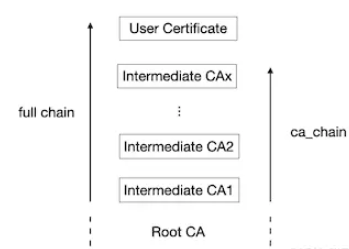
说明：
由于 Root CA 根证书是已经受系统信任的（我们已把它放在操作系统的 Key store 中），所以 ca chain 和 full chain 中并不需要包含 Root CA。
5. 设置 URLs
CA 证书都是需要提供 Issuer 证书信息和撤销列表 CRL 的，我们在 x509 v3 extensions 中已经提供了这些信息，但是 vault 中还多了一个步骤，需要单独再设置 URLs，如下：
$ vault write pki_rsa_ica1/config/urls \
issuing_certificates="http://127.0.0.1:8200/v1/pki_rsa_ica1/ca" \
crl_distribution_points="http://127.0.0.1:8200/v1/pki_rsa_ica1/crl"
这里说明一下，这里的 URLs 应该设置为 HTTP 协议，但是注意到，前面我们启动的 vault 是 HTTPS 协议的，所以这里就遇到了一个矛盾点，vault 官方建议的做法是在 vault 前面部署一个反向代理服务器（nginx）来处理 HTTPS 连接，然后 vault 仅在内网部署为 HTTP 服务，这里就不过多介绍更多细节了。
- 使用 Intermediate CA 签发一个用户证书 Vault 中有严格的权限管理，对每个要执行的动作，都必须先关联一个 Role，而这个 Role 则绑定了一定的操作权限。
因此，这里我们要签发证书之前，必须先创建 Role
$ vault write pki_rsa_ica1/roles/mylab-com allowed_domains=mylab.com allow_subdomains=true max_ttl=720h
$ vault write pki_rsa_ica1/issue/mylab-com common_name=blog.mylab.com
上面的 write pki_rsa_ica1/issue/... 操作会把 certificates 和 key 都打印在屏幕，我们需要把用户的 Key 和 Certificate 保存到文件（比如，保存为 blog.key 和 blog.crt），因为后续搭建 HTTPS 服务时需要用到。
查看所有已签发的证书列表
$ vault list pki_rsa_ica1/certs
查看所签发的证书的详细信息
$ vault read pki_rsa_ica1/cert/68-3c-aa-83-8c-8c-b1-7c-65-51-cd-4b-76-c1-a7-da-d4-eb-54-d0 -format=json | jq -r .data.certificate | openssl -text -noout -in /dev/stdin
7. 提取 ca_chain 并与用户证书合并
这一步很关键，如果 web 应用程序只有上面的用户证书，那是不够的，因为 ICA 并没有被系统信任（操作系统或浏览器目前只信任了 Root CA 根证书）。所以我们必须把 full chain 作为 web 应用程序的证书才能成功建立 HTTPS 连接。
第一步：提取 ca_chain
$ vault read -format=json pki_rsa_ica1/cert/ca_chain | \
jq -r .data.certificate > ca_chain.pem
第二步：与用户证书合并
$ cat blog.pem ca_chain.pem > fullchain.pem
fullchain.pem 的结构是，用户证书在最上面，它的直接 Issuer 在其下面，然后以此类推，如下：
注：root ca 已经导入操作系统受信任，所以 fullchain.pem 中无需包含它（当然，包含了也没关系）。
现在我们已经有了一个完整的证书链，我们用 nginx 搭建一个简单 HTTPS 服务来测试一下。
/etc/nginx/conf.d/blog.conf
server {
listen 443 ssl;
server_name blog.mylab.com;
ssl_certificate /etc/nginx/ssl/fullchain.pem;
ssl_certificate_key /etc/nginx/ssl/blog.key
ssl_protocols TLSv1.2 TLSv1.3;
ssl_ciphers ECDHE-ECDSA-AES128-GCM-SHA256:ECDHE-RSA-AES128-GCM-SHA256:ECDHE-ECDSA-AES256-GCM-SHA384:ECDHE-RSA-AES256-GCM-SHA384:ECDHE-ECDSA-CHACHA20-POLY1305:ECDHE-RSA-CHACHA20-POLY
ssl_prefer_server_ciphers on;
location / {
proxy_pass http://127.0.0.1:8085;
}
}
注：http://127.0.0.1:8085/ 是本地一个简单的 web 页面，nginx 做反向代理提供 HTTPS 链接。部署成功之后（别忘了配置 DNS），在浏览器中输入 https://blog.mylab.com/ 即可打开页面。
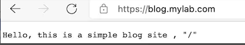
点击🔒，可以看到证书信息如下：
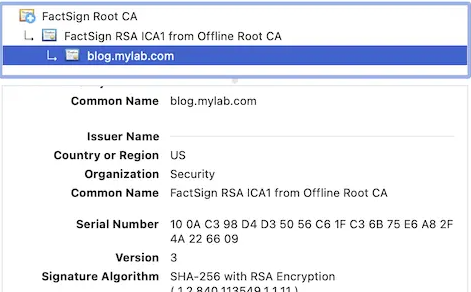
至此，我们已经实现了一套完整的证书体系，并通过 vault 实现了为应用程序自动签发数字证书的功能。
External CA Pool
手动使用 Root CA 来签发 Intermediate CA 的这个步骤并不够智能，有没有好的解决方案？
答案是有，Vault 提供了 Plugin 功能，用户可以使用第三方插件来管理 Intermediate CA 的申请和撤销，这使得 Vault 可以支持多种外部的 CA Pool。
gcppca 是 Google Cloud Platform 平台上的这样一个 Vault 插件，它可以为 Vault 注册外部 CA Pool，这样，在 Vault 中就可以利用外部 CA 来申请到数字证书了，不管是申请用户证书还是 Intermediate CA 证书，都很方便，更好地扩展了 Vault 的功能。
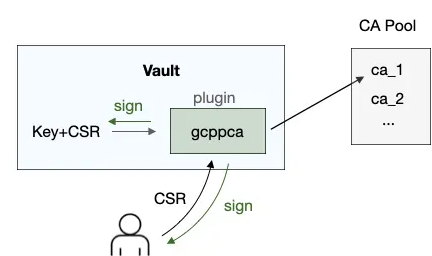
接下来，我们继续深入一步，使用 cert-manager 为 Kubernetes 集群中的应用来管理证书。
第三部分：使用 cert-manager 为 kubernetes 集群中的应用程序自动颁发证书
前言
实际上 vault 可直接对接 kubernetes，它提供了 kubernetes authenticate 方法，也就是说，kubernetes 中的应用可以使用经授权的 token 登录 vault，从中获取的 secret 信息，比如 password 等。
cert-manager 则专门为证书管理而生，极大地方便了从 kubernetes 外部证书源获取证书的操作。
在架构上 cert-manager 作为 Certificate Requester，它支持从多种不同的 Issuer 来申请证书，包括 Vault, Acme (Let's Encrypt), Venafi 等，它甚至还支持自己创建和管理自签名 CA 证书。
1. 安装 cert-manager
$ kubectl apply -f https://github.com/jetstack/cert-manager/releases/latest/download/cert-manager.yaml
安装成功后，k8s 中会增加如下几个资源：
- Challenge
- Order
- CertificateRequest
- Certificate
- ClusterIssuer
- Issuer
2. Vault 认证
cert-manager 需要访问 vault server 的 pki engine，并执行 Sign 的操作（即 pki_rsa_ica1/issue/mylab-com common_name=blog.mylab.com) 以便获得客户证书，因此需要有 vault 的登录权限和 pki engine 访问权限。Vault 支持以下几种认证方式：
- Token Authentication
- AppRole Authentication
- Kubernetes Authentication
这里不一一介绍，只介绍 Kubernetes Authentication 这种方式。
1) 在 kubernetes 中创建 service account 及 clusterrolebinding
这种认证方式的原理是 Vault 支持使用 kubernetes 中的 service account token 来，本质上是它把认证过程代理了给了 kubernetes，只有一个有效的 service account token 才能登录 vault。
因此，我们需要先在 kubernetes 中创建 service account，并创建关联这个 service account 的相关权限 (clusterrolebinding )。
$ kubectl -n default create serviceaccount vault-auth-certmanager
$ cat << EOF | kubectl apply -f -
apiVersion: rbac.authorization.k8s.io/v1
kind: ClusterRoleBinding
metadata:
name: role-tokenreview-binding
namespace: default
roleRef:
apiGroup: rbac.authorization.k8s.io
kind: ClusterRole
name: system:auth-delegator
subjects:
- kind: ServiceAccount
name: vault-auth-certmanager
namespace: default
EOF
我们把 jwt_token，k8s_host,ca_crt 等信息应该导出至环境变量，方便后续操作引用（假设 Vault 和 k8s master 在同一台机器）：
$ export VAULT_SA_NAME=$(kubectl -n default get sa vault-auth-certmanager -o jsonpath="{.secrets[*]['name']}")
$ export SA_JWT_TOKEN=$(kubectl -n default get secret $VAULT_SA_NAME -o jsonpath="{.data.token}" | base64 --decode; echo)
$ export SA_CA_CRT=$(kubectl -n default get secret $VAULT_SA_NAME -o jsonpath="{.data['ca.crt']}" | base64 --decode; echo)
$ export K8S_HOST=$(kubectl config view --raw --minify --flatten \
--output 'jsonpath={.clusters[].cluster.server}')
2) 在 Vault 中配置 kubernetes 的登录凭证 这一步 Vault 需要访问 kubernetes，以便其能确认 jwt-token 是否有效，如果有效，那么就可以认证通过。因此，我们把上一个步骤中保存好的信息填入 auth/kubernetes 挂载点。
$ vault auth enable kubernetes
$ vault write auth/kubernetes/config \
token_reviewer_jwt="$SA_JWT_TOKEN" \
kubernetes_host="$K8S_HOST" \
kubernetes_ca_cert="$SA_CA_CRT" \
issuer="https://kubernetes.default.svc.cluster.local"
写入好配置之后，查看一下
$ vault read auth/kubernetes/config
vault 中所有的路径访问都有 ACL 控制，所以接下来我们需要创建一个 role，并关联访问 pki_rsa_ica/ 这个 PKI path 的 policy。
(1) 创建 policy
$ cat pki-policy.hcl
path "pki_rsa_ica1" { capabilities = ["create", "read", "update", "delete", "list", "sudo"]}
$ vault policy write pki_policy pki_policy.hcl
$ vault read sys/policy/pki_policy
(2) 创建 role 并关联 policy
$ vault write auth/kubernetes/role/cert-manager-role \
bound_service_account_names=vault-auth-certmanager \
bound_service_account_namespaces='default' \
policies=pki_policy \
ttl=720h
$ vault read auth/kubernetes/role/cert-manager-role
$ vault list auth/kubernetes/role/cert-manager-role
注：TTL 配置，Vault 中默认的 max_ttl 是 768h，如果我们把 ttl 设置得比 768h 大，那么会被 cap。不过我们可以手动设置 max_ttl 大于 768h。
Short-lived Token
由于 Vault 并不会自动 refresh token，所以不使用 short-lived token。但是从 kubernetes 1.21 开始，有了两点改动：
- JWT token 有过期时间，而且生命周期与 pod 相同
- JWT 的 iss 字段跟集群的配置有关
这就给使用 vault 带来了一些挑战，从 1.9.0 版本开始，vault 默认不再验证 issuser 字段，因为 kubernetes 自己会验证，vault 没必要重复劳动。
disable_iss_validation=true
(3) 创建 pki engine 下的 role
前面的 role 是 auth/kubernetes 挂载点下的，用于获得访问 pki 路径的权限，我们还需要在 pki 路径下创建一个专门用于控制签发证书的 role，没有这个 role，我们就无法 Issue Certificate。
$ vault write pki_rsa_ica1/roles/any_name allow_any_name=true max_ttl=720h ttl=720h not_before_duration=10s
$ vault read pki_rsa_ica1/roles/any_name
注：这个 role 只在需要签发用户证书的时候有用，所以我们把它的 ttl 设置的比较短即可，属于一个即用即弃的临时性角色。为了图方便，我们这里使用 allow_any_name 来允许其签发任何域名，你可以根据自己的需求来添加可签发的域名限制。
3. cert-manager Issuer/ClusterIssuer
现在我们需要回到 Kubernetes 中，创建 Issuer 对象，它会使用我们上面配置好的 kubernetes auth 信息来映射一个 CA 到 kubernetes 中，然后我们就可以通过创建 Certificate 对象来获得一个用户证书了，cert-manager 会将该证书保存在我们指定的 Secret 对象中。
vault-issuer-by-sa.yaml
apiVersion: cert-manager.io/v1
kind: Issuer
metadata:
name: vault-issuer-by-sa
namespace: default
spec:
vault:
path: pki_rsa_ica1/sign/any_name
server: https://vault-dev.lab:8200
caBundle: LS0tLS1CRUdJTiBDRURS0tLS0tCk1JSUVCekNDQXUrZ0F3...S0tLS0tCg==
auth:
kubernetes:
role: cert-manager-role
mountPath: /v1/auth/kubernetes
secretRef:
name: vault-auth-certmanager-token-j5vgx
key: token
注：
由于 Vault Server 使用了 HTTPS 协议，因此上次文件中必须添加 caBundle 字段，其值是签发 vault.crt 的 CA 证书的 base64 值（cat FactSign_Root_CA.crt | base64 -w 0），必须是单行格式（不包含 \n）。
caBundle 是用来认证 vault.crt 的，没有它就无法与 Vault Server 建立 HTTPS 连接。
执行下列命令：
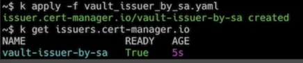
Issuer 和 ClusterIssuer 区别
如果使用的是 Issuer，那么只能签发与 Issuer 在相同 namespace 的 Certificate。 如果使用的是 ClusterIssuer，它可以签发任何 namespace 的 Certificate。
需要注意的是： 如果使用 ClusterIssuer，那么前面的 Service Account 必须创建在 cert-manager 这个 namespace 中，否则 cert-manager 会提示找不到该 service account token。
4. cert-manager Certificate
Issuer 或 ClusterIssuer 所签发的 Certificate 最终是需要保存在 Secret 对象中并被 Web 程序所引用，所以请确保其 namespace 与想要访问该 Certificate 的 Web 程序所在的 namespace 相同。
现在假设把 Web 应用部署在 default namespace 中，因此，Certificate, 及 Secret 都需要在这个 namespace 中。
vault_certificate_by_sa.yaml
apiVersion: cert-manager.io/v1
kind: Certificate
metadata:
name: vault-cert-by-issuer
namespace: default
spec:
secretName: tls-vault-cert-issuer
duration: 720h # 90d
renewBefore: 36h
subject:
organizations:
- homelab
commonName: "*.myblog.com"
dnsNames:
- echo.myblog.com
- hello.myblog.com
isCA: false
privateKey:
algorithm: RSA
encoding: PKCS8
size: 2048
usages:
- server auth
- client auth
secretName: tls-vault-cert-issuer 是我们指定的想要用于保存 Certificate 内容的 Secret，cert-manager 在成功签发证书之后会自动创建该 Sercret 为我们保存内容。
查看 Secret 对象：
解码 tls.crt
$ k get secret tls-vault-cert-clusterissuer -o jsonpath="{.data['tls.crt']}" | base64 --decode1
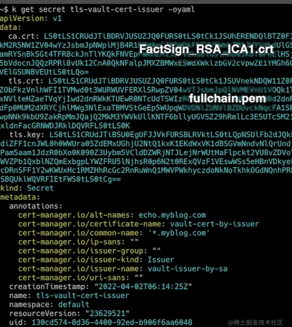
可以看到，tls.crt 是一个 full chain，它包含了两个证书，一个是 Issuer （即 CA）的证书，一个是 Web 程序的证书。
5. Kubernetes 中部署 Web 应用
下面我们将在 k8s 集群中部署一个简单的 web 应用，并使用上面所签发的证书来启动 HTTPS 服务。
(1) Deployment
echo-myblog-com.yaml
apiVersion: apps/v1
kind: Deployment
metadata:
name: echo-myblog-com
namespace: default
spec:
selector:
matchLabels:
app: echo-myblog-com
replicas: 1
template:
metadata:
labels:
app: echo-myblog-com
spec:
containers:
- name: echo-myblog-com
image: hashicorp/http-echo
args:
- "-text=hello, this is echo.myblog.com
ports:
- containerPort: 5678
(2) Service
echo-service.yaml
apiVersion: apps/v1
kind: Service
metadata:
name: echo-myblog-com
namespace: default
spec:
ports:
- port: 80
targetPort: 5678
selector:
app: echo-myblog-com
(3) Ingress
echo-ingress.yaml
apiVersion: networking.k8s.io/v1
kind: Ingress
metadata:
name: echo-myblog-com-ingress
namespace: default
annotations:
nginx.ingress.kubernetes.io/rewrite-target: /
spec:
ingressClassName: nginx
tls:
- hosts:
- echo.myblog.com
secretName: tls-vault-cert-clusterissuer
rules:
- host: echo.myblog.com
http:
paths:
- path: /
pathType: Prefix
backend:
service:
name: echo-myblog-com
port:
number: 80
执行：
kubectl apply -f echo-deploy.yaml -f echo-service.yaml -f echo-ingress.yam
最后，我们需要修改一下本地的 DNS 配置，使得 echo.myblog.com 域名指向正确的 LoadBalancer IP 地址（由 MetalLB 提供）。
然后打开浏览器，输入 https://echo.myblo.com/ 即可看到网页内容：
查看证书
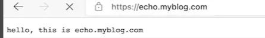
查看证书
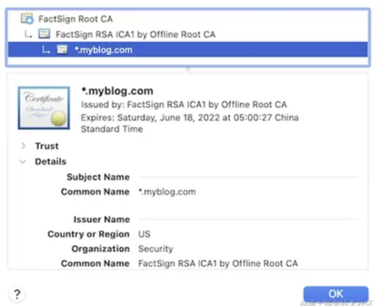